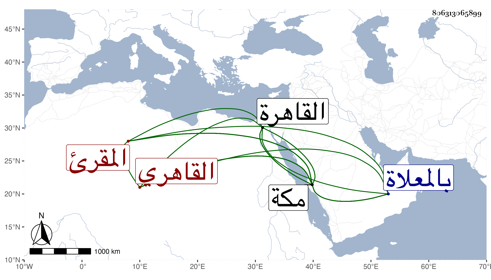

0902Sakhawi.DawLamic.ITO20230111-ara1.EIS1600.806313065899
Biography ID: 806313065899
453
محمد بن علي بن خليل الشمس القاهري المقرئ نزيل مكة والماضي ابنه علي وحفيده عمر ثم ابنه علي ويعرف بابن الشيرجي . ذكره الفاسي في مكة وقال إنه فاضل عني بالقراآت السبع وكان له بها خبرة وعلى ذهنه حكايات وأخبار حسنة مع حسن صوت بالقراءة بحيث كان يصلي التراويح بالمسجد الحرام فيكثر الجمع لسماعه ، ودام على ذلك سنين ثم انقطع قبيل موته لضعفه وكان في القاهرة من ملازمي القراءة بمشهد الليث كل جمعة ، وتردد لمكة كثيرا آخرها سنة أربع وثمانمائة في رسالة لصاحب مكة ثم قطنها وسكن بدار أم المؤمنين خديجة بزقاق الحجر في آخر سنة خمس وثمانمائة بعد موت عمر النجار المؤذن حتى مات ، وكان يجتمع إليه بها في ليلة كل سبت جماعة يقرؤن ويذكرون ويمدحون بل كان مديما للتلاوة بحيث بلغني أنه كان يقرأ في كل يوم وليلة ختمة وفي مرض موته ثلث ختمة رحمه الله . واتصل في مكة بابنة الجمال الأميوطي ورزق منها أولادا . مات في ليلة الخميس ثالث عشري ربيع الأول سنة سبع وعشرين بمكة ودفن في صبيحتها بالمعلاة .
